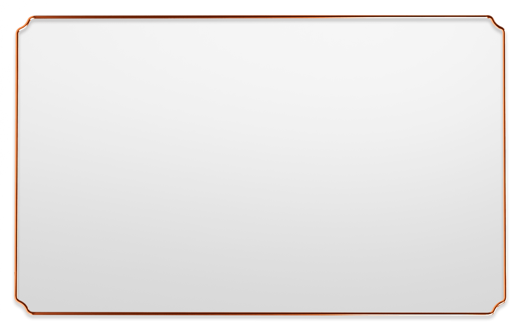

<!DOCTYPE html>
<html lang="zh">

<head>
	<meta charset="UTF-8">
	<meta name="viewport" content="width=device-width, initial-scale=1.0, minimum-scale=1.0, maximum-scale=1.0" />
	<title></title>
	<link rel="stylesheet" href="../css/tds.css">
	<link rel="stylesheet" href="../css/swiper-bundle.min.css">
	<style media="screen">
		.content-1,
		.content-2 {
			width: 15%;
			height: 23%;
			top: 73.5%;
			left: 66.5%;
			z-index: 1;
		}

		.content-2 {
			left: 82.5%;
		}

		.content2-wrapper,
		.content3-wrapper {
			position: fixed;
			top: 0;
			left: 0;
			width: 100%;
			height: 100%;
			opacity: 0;
			z-index: -1;
			transition: 0.25s all;
		}

		.content2-wrapper-img,
		.content3-wrapper-img {
			position: absolute;
			transform: translateX(-50%);
			left: 50%;
			bottom: 0;
			width: 100%;
			height: 70%;
			overflow: hidden;
		}

		.content2-wrapper-img {
			width: 88%;
			overflow-y: auto;
		}

		.content3-wrapper-img {
			display: flex;
			justify-content: center;
			align-items: flex-end;
			overflow-x: auto;
			bottom: 5%;
			width: 100%;
			padding-right: 3%;
			/* padding-left: 5%; */
			/* width: calc(100% - 5%); */
		}

		.content3-wrapper-img img {
			width: 70%;
			height: 100%;
			object-fit: contain;
		}

		#content3-2 {
			height: calc(100% - 7%);
			padding-right: 2%;
		}
	</style>
</head>

<body>
	<div class="page">
		<!-- logo -->
		<div class="logo">
			
		</div>

		
		<video src="../res/index0/index0d4.mp4" class="bg" loop autoplay muted></video>

		<div class="content-wrapper">
			<div class="content content-1" onclick="select(1)"></div>
			<div class="content content-2" onclick="select(2)"></div>
		</div>

		<div class="content2-wrapper flex-d">
			

			<div class="content2-wrapper-img">
				
			</div>
		</div>

		<div class="content3-wrapper flex-d">
			

			<div class="content3-wrapper-img">
				
				<!--  -->
			</div>
		</div>
</body>
<script type="text/javascript" src="../script/api.js"></script>
<script type="text/javascript" src="../script/tds1.0.js"></script>
<script type="text/javascript" src="../script/ajax.js"></script>
<script src="../script/swiper-bundle.min.js"></script>
<script type="text/javascript">
	apiready = function () {
		api.parseTapmode();
		// tds.js 函数
		tabCreate(0, 'frame')

		setTimeout(() => {
			let logo = $api.dom('.logo')
			$api.css(logo, "top:-20%;opacity:0")
		}, 200);
	}
	let flag = 0

	function select(params) {
		if (params == 1) {
			flag = 1
			$api.css($api.dom('.content2-wrapper'), 'opacity:1;z-index:1')
		} else {
			flag = 2
			$api.css($api.dom('.content3-wrapper'), 'opacity:1;z-index:1')
		}
	}

	function closeFn() {
		if (flag == 0) {
			api.closeFrame()
		} else if (flag == 1) {
			$api.css($api.dom('.content2-wrapper'), 'opacity:0;z-index:-1')
			flag = 0
		} else if (flag == 2) {
			$api.css($api.dom('.content3-wrapper'), 'opacity:0;z-index:-1')
			flag = 0
		}
	}
</script>

</html>